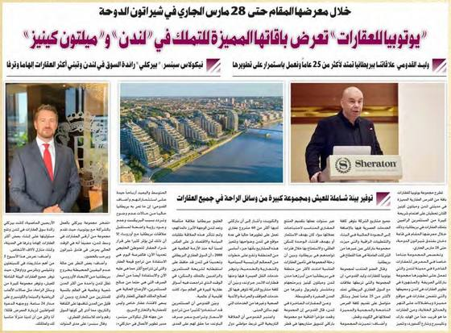
In the press, 2006 to 2019
95 articles from newspapers in Kuwait, Qatar, Bahrain and the UAE, in Arabic and English, collected in the TREG press archive. Headlines are in English, and Arabic articles are summarised. Open a clipping to read it.
Showing 95 articles
2019

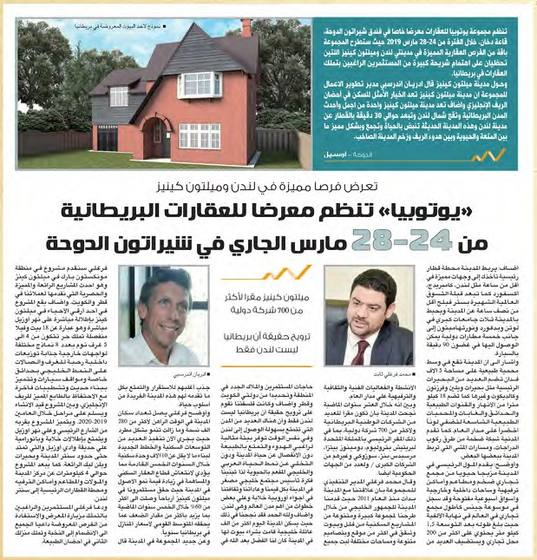
Utopia organises a British property exhibition at Sheraton Doha, 24-28 March: opportunities in London and Milton Keynes.
2018

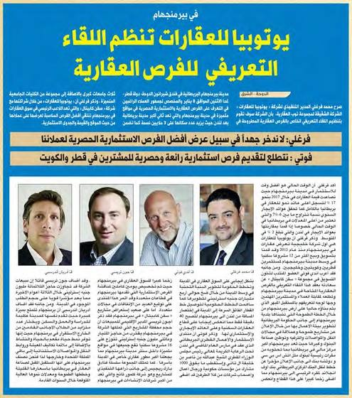
In Birmingham: Utopia Properties holds an introductory meeting on property opportunities.

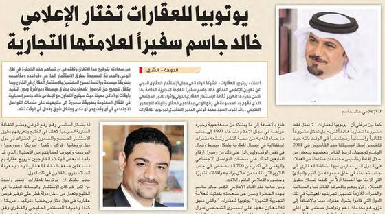
Utopia Properties selects media figure Khalid Jassim as brand ambassador.
2017

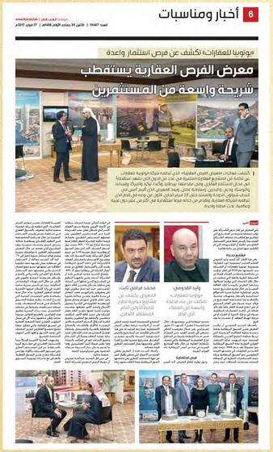
Real Estate Opportunities Exhibition attracts a wide segment of investors.

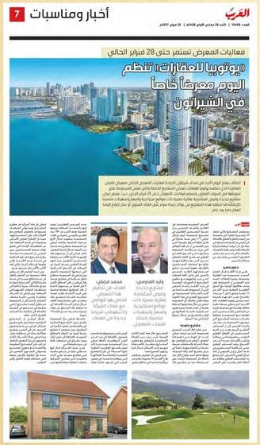
Utopia Properties opens its exhibition at the Sheraton today (until 28 February).

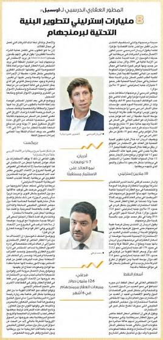
GBP 8 billion for Birmingham infrastructure development.

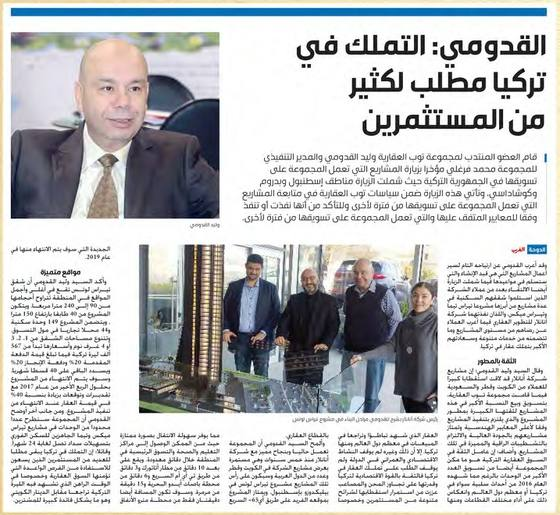
Al Qadoumi: ownership in Turkey is in demand by many investors.

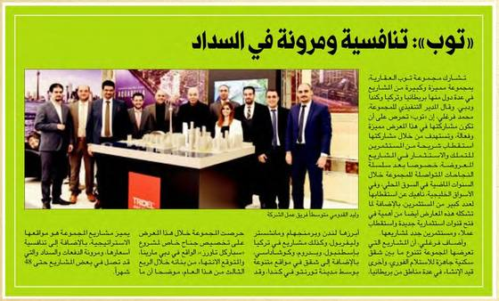
Top: competitiveness and flexibility in payment.

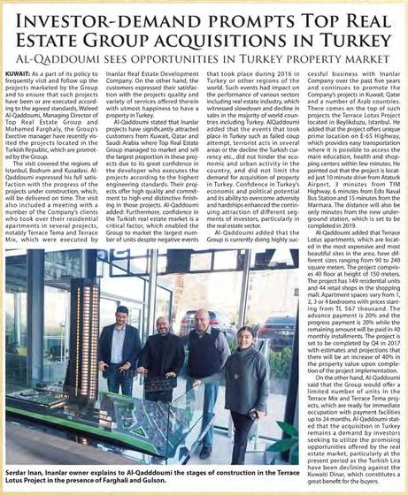
Investor-demand prompts Top Real Estate Group acquisitions in Turkey (Inanlar; Terrace Lotus; Terrace Tema and Terrace Mix delivered).

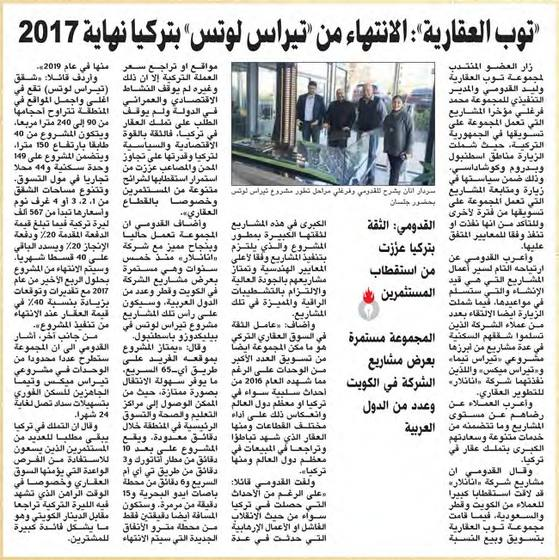
Top Real Estate: Terrace Lotus in Turkey to be completed by the end of 2017.

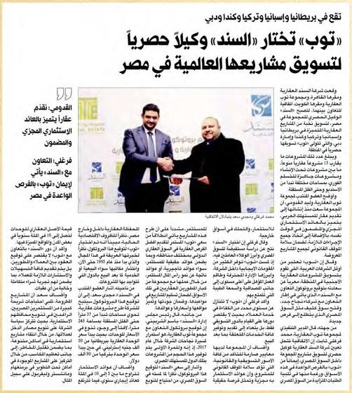
Top selects Al Sanad as exclusive agent to market its international projects in Egypt (projects in Britain, Spain, Turkey, Canada and Dubai).
2016

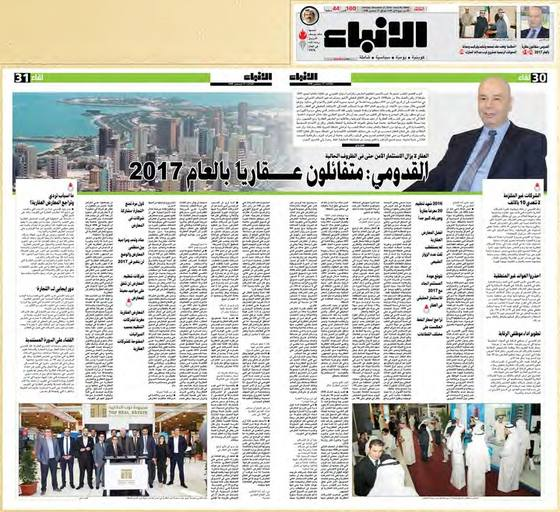
Al Qadoumi: optimistic about real estate in 2017.

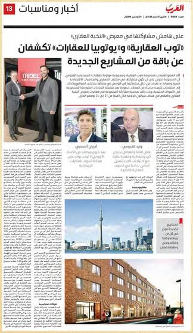
Top Real Estate and Utopia Properties unveil a package of new projects (Real Estate Elite exhibition).

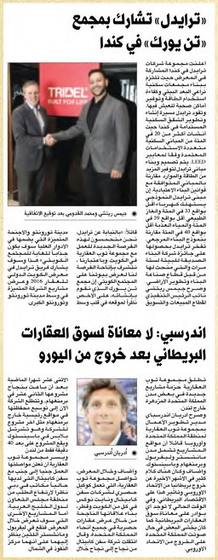
Tridel takes part with Ten York in Canada; Endersby: no hardship for the UK property market after Brexit.

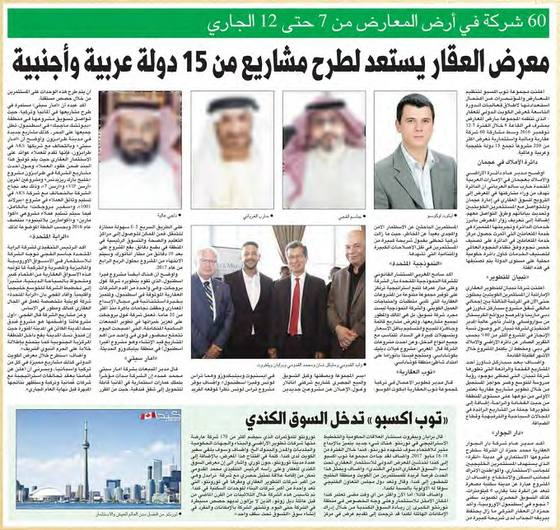
Property exhibition (60 companies, 7-12 November) to launch projects from 15 Arab and foreign countries; Top Expo enters the Canadian market.

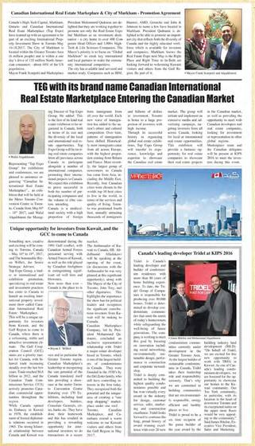
TEG with its brand name Canadian International Real Estate Marketplace entering the Canadian market; Canada's leading developer Tridel at KIPS 2016.

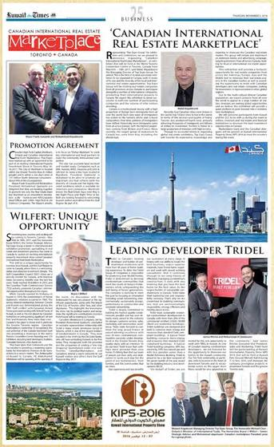
Canadian International Real Estate Marketplace: promotion agreement; Wilfert: unique opportunity; leading developer Tridel.

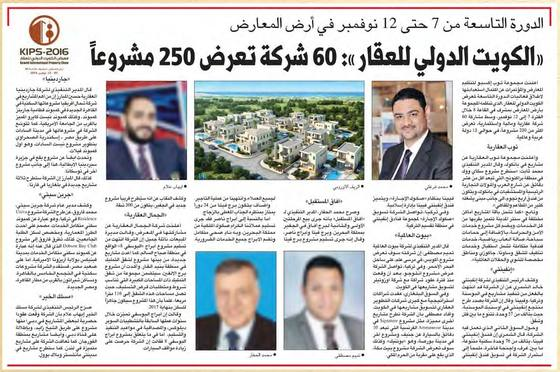
Kuwait International Property Show (KIPS 2016, 9th edition, 7-12 November): 60 companies show 250 projects.

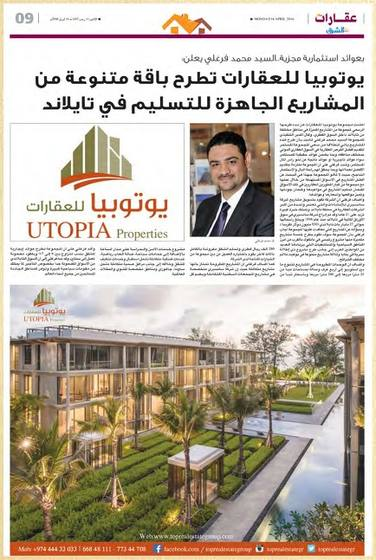
Utopia Properties offers a diverse package of ready-to-deliver projects in Thailand.

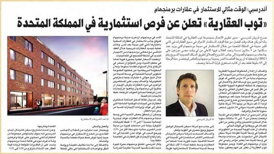
Top Real Estate announces investment opportunities in the UK; Endersby: an ideal time to invest in Birmingham.

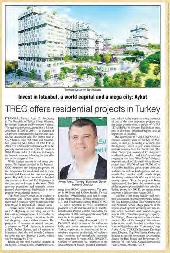
Invest in Istanbul, a world capital and a mega city: Aykut; TREG offers residential projects in Turkey.

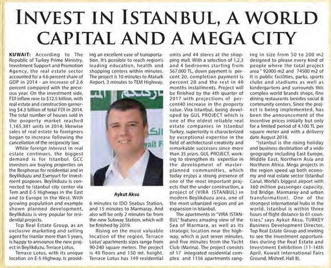
Invest in Istanbul, a world capital and a mega city.

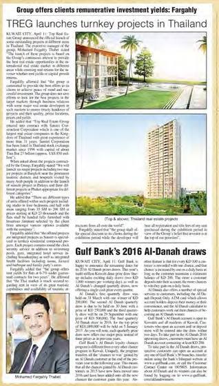
TREG launches turnkey projects in Thailand; Group offers clients remunerative investment yields: Farghaly.

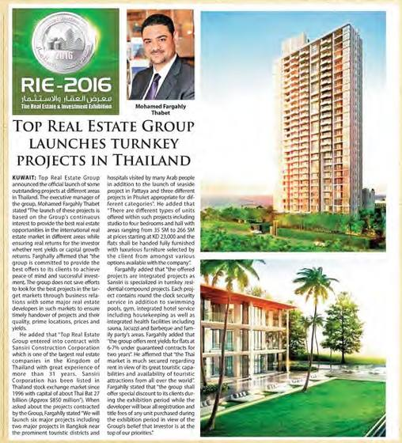
Top Real Estate Group launches turnkey projects in Thailand.

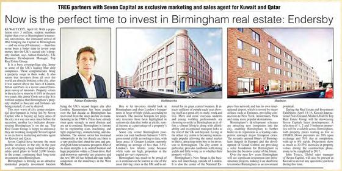
TREG partners with Seven Capital as exclusive marketing and sales agent for Kuwait and Qatar; Now is the perfect time to invest in Birmingham real estate: Endersby.

Now is the perfect time to invest in Birmingham real estate: expert (RIE 2016).

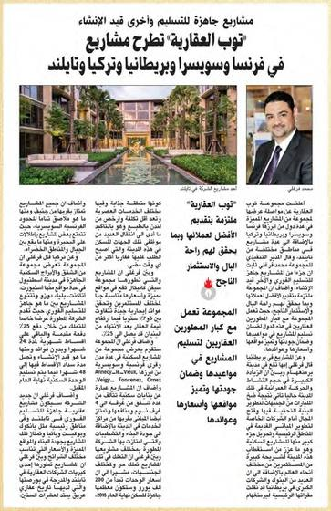
Top Real Estate offers projects in France, Switzerland, Britain, Turkey and Thailand.

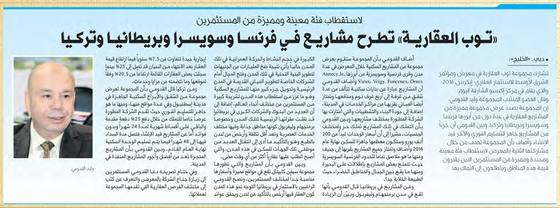
Top Real Estate offers projects in France, Switzerland, Britain and Turkey.
2015

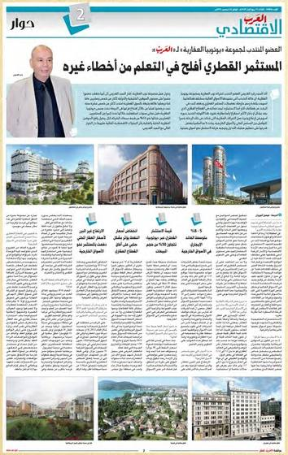
The Qatari investor has learned from the mistakes of others (interview, economy section).

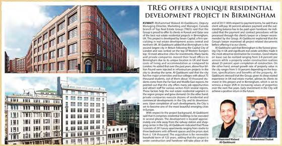
TREG offers a unique residential development project in Birmingham.

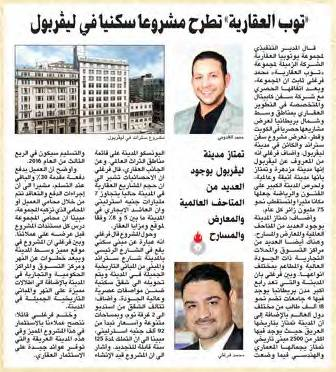
Top Real Estate offers a residential project in Liverpool.

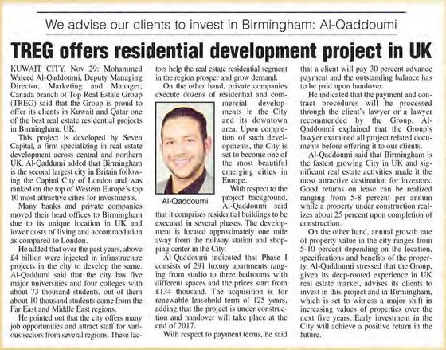
TREG offers residential development project in UK; We advise our clients to invest in Birmingham: Al-Qaddoumi.

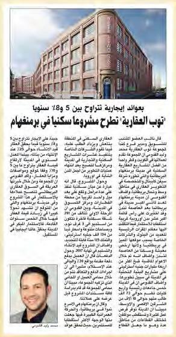
Top Real Estate offers a residential project in Birmingham with annual rental yields of 5-8%.

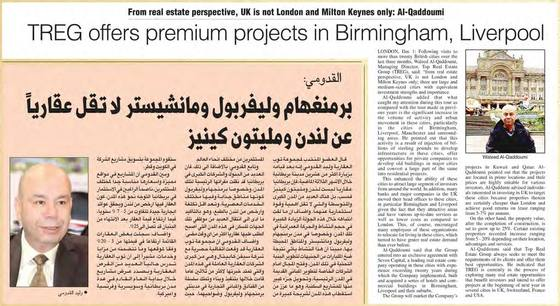
Al Qadoumi: Birmingham, Liverpool and Manchester are no less important for property than London and Milton Keynes.

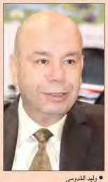
TREG offers premium projects in Birmingham, Liverpool; From real estate perspective, UK is not London and Milton Keynes only: Al-Qaddoumi.

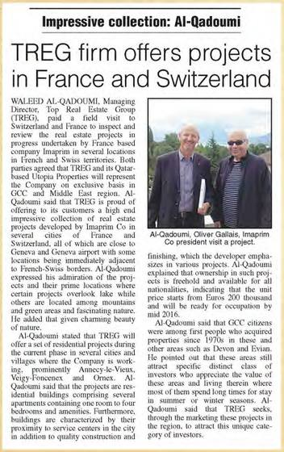
TREG firm offers projects in France and Switzerland (Imaprim); Impressive collection: Al-Qadoumi.

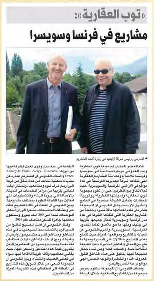
Top Real Estate: projects in France and Switzerland.

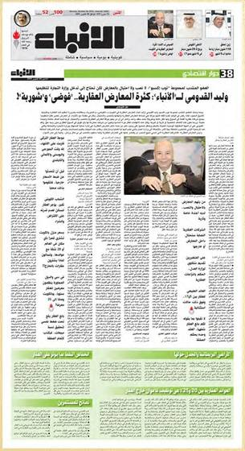
Waleed Al Qadoumi to Al Anbaa: too many property exhibitions (interview with the Top Expo managing director). Caption reads Kuwait Times; the masthead is Al Anbaa.

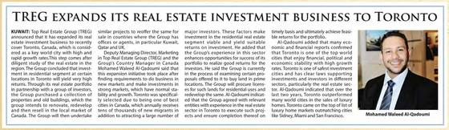
TREG expands its real estate investment business to Toronto.

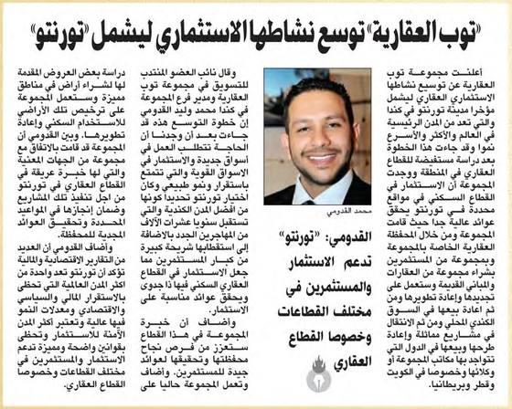
Top Real Estate expands its investment activity to Toronto.

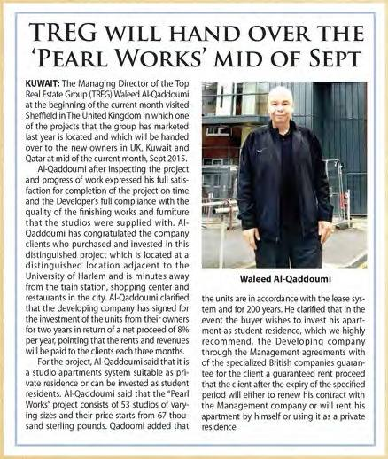
TREG will hand over the 'Pearl Works' mid of Sept.

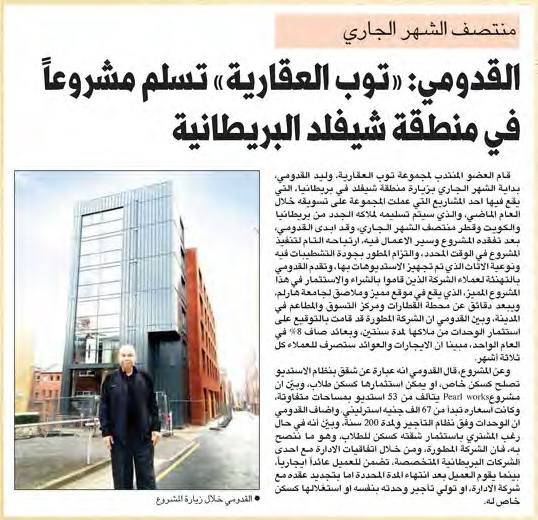
Al Qadoumi: Top Real Estate hands over a project in Sheffield, UK.

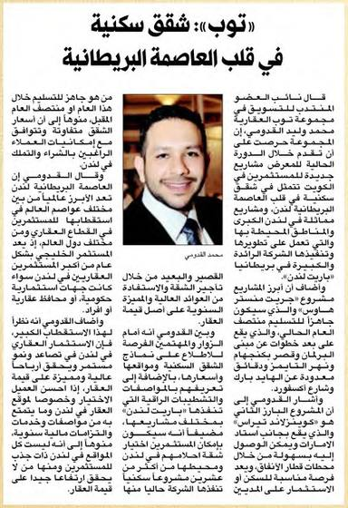
Top: residential apartments in the heart of the British capital.

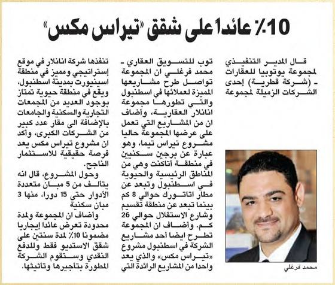
10% return on Terrace Mix apartments.

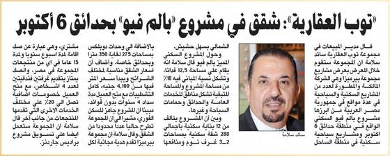
Top Real Estate: apartments in Palm View, 6th of October Gardens.

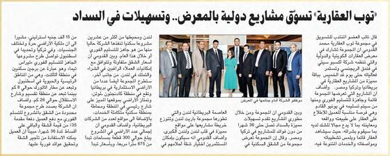
Top Real Estate markets international projects at the exhibition, with payment facilities.

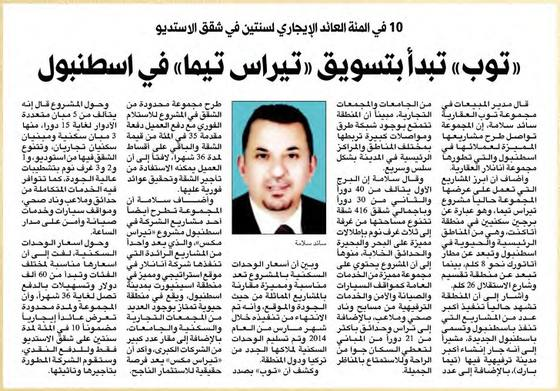
Top begins marketing Terrace Tema in Istanbul (10% rental return for two years on studios).

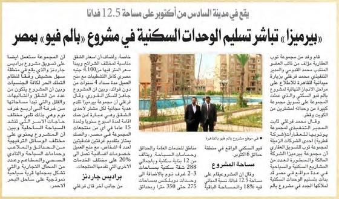
Pyramisa begins handing over residential units at Palm View, Egypt.

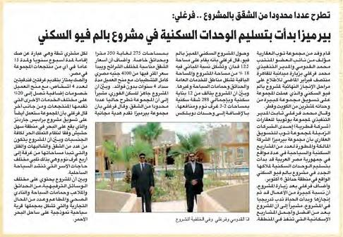
Pyramisa begins handing over residential units at Palm View.

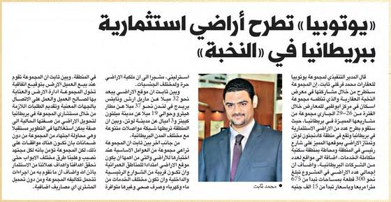
Utopia offers investment land in Britain at the Al Nukhba (Elite) exhibition.

Top Real Estate at the exhibition: Terrace Tema in Istanbul ready for delivery, 25% down payment and instalments up to 36 months.
2014

Top Real Estate offers residential apartments in London.

Top Real Estate: exclusive offers on apartments in the heart of London developed by Barratt.

Top Real Estate continues to offer its distinctive projects in Britain and Turkey.

Top continues to offer its projects in Britain and Turkey (25% down payment, 36-month instalments for Istanbul apartments).

Top Real Estate offers projects in Britain and Turkey.

Mohammed Al Qadoumi: student housing is a rewarding investment.

Top: Terrace Tema in Istanbul ready for delivery, 25% down payment, instalments up to 36 months.

Thabet: Utopia offers investment land.
2013

Al Qadoumi: Terrace Mix is an investment opportunity in Istanbul (from KD 18,000, 7% guaranteed annual rental yield).

Top Real Estate Group hands over houses in UK; owners express satisfaction.

In Milton Keynes, Britain: Top Real Estate completes and hands over 45 villas.

Kuwaitis buying property abroad: investment boldness or repeating past mistakes?

New UK real estate investment product for Kuwaiti investors; TREG to unveil project at Kuwait Expo (One Hockley, Nottingham).

Top offers a new investment project in the UK.

Top Real Estate offers projects in Istanbul.
2012

Top Real Estate and Utopia Properties take part in the exhibition (houses and villas in Milton Keynes).

Top Real Estate sponsors the Gold Exhibition; Al Qadoumi: strong ties between Kuwaitis and British property.
Al Qabas
Top Expo launches the Real Estate and Investment Exhibition today (Mishref, until 14 April).
2011
Al Anbaa
Top Real Estate offers property management service in Britain: looking after your property as if it is our own (partner Morphey Parsons Wright; KIPS 2011).

Top Real Estate, gold sponsor of the 6th Qatar International Real Estate and Investment Exhibition; Al Qadoumi: regional political changes open new horizons for property investment.
2010


2009

Is the fall of Dubai what is wanted? (article by Waleed Al Qadoumi).

The Dubai World crisis and its effect on the property sector.

Al Qadoumi: the coming phase will strengthen buying opportunities for end users and push speculators out of the market.

Waleed Al Qadoumi: expanding into exhibitions reduces the negative effects of the financial crisis.

Top Real Estate announces its participation in the exhibition.

Pyramisa Hotels & Resorts appoints Top Real Estate exclusive agent to market its projects in the Gulf states.
2008

Top Real Estate shows Emirati projects at Opp Live 08 in London.

Top Real Estate, gold sponsor of the Qatar Money and Investment Exhibition.

Al Qadoumi: Top to show residential and investment land in Britain and Jordan and apartments in Dubai and Sharjah (Dubai International Property Show, 17-19 February).
2007

Top Real Estate takes part in the Icarus Middle East exhibition in Sharjah.

Top Real Estate Marketing takes part in the Real Estate, Investment and Banking Services Exhibition in Jordan (10-13 December).

Top Real Estate, gold sponsor of the Bahrain International Property Exhibition.

Top Real Estate, gold sponsor of the Bahrain International Property Exhibition: we present several investment opportunities.

Top Real Estate Marketing showcases projects in Sharjah, Jordan and Britain (exhibitions in Qatar and Bahrain).

Al Qadoumi: Top Real Estate attracts investors to projects in the Emirates, Jordan and Britain (three exhibitions in November).

Al Qadoumi: Top Real Estate Marketing attracts a large segment of investors (two exhibitions in Qatar and Bahrain).

Top Real Estate Marketing showcases its projects in Sharjah, Jordan and Britain.

Top Real Estate Marketing showcases a collection of property projects (2nd Qatar international exhibition).

Top Real Estate Marketing showcases leading projects in Sharjah, Jordan and Britain (Qatar International Real Estate and Investment Exhibition).
2006


No articles match this filter.
Exhibitions and events
Shows TREG took part in, sponsored or organised, as recorded in its press and advertisement archives.
Mar 2019London and Milton Keynes exhibition with Berkeley, Sheraton Doha, Dukhan Hall, 24-28 MarDoha, QatarOrganiser (Utopia Properties)
2018SevenCapital Birmingham introductory event, Sheraton DohaDoha, QatarOrganiser (Utopia Properties)
Feb 2017Real Estate Opportunities Exhibition, Sheraton Grand Doha, Dukhan Hall, 26-28 FebDoha, QatarOrganiser (Utopia Properties)
Apr 2016Real Estate and Investment Exhibition (RIE 2016), MishrefKuwaitExhibitor (SevenCapital)
Nov 2016Kuwait International Property Show (KIPS 2016, 9th edition), 7-12 NovKuwaitExhibitor (Tridel)
Nov 2016Real Estate Elite exhibitionQatarExhibitor
2015Kuwait International Property Show (KIPS 2015)KuwaitExhibitor (Inanlar)
Jan 2015Al Nukhba (Elite) exhibitionKuwaitExhibitor (Utopia, UK land)
Nov 2014Kuwait International Property Show (KIPS 2014)KuwaitExhibitor (Barratt London)
20137th Qatar International Exhibition for Real Estate and InvestmentDoha, QatarExhibitor
2013Kuwait International Property Show (KIPS 2013)KuwaitExhibitor
Apr-May 2013Kuwait Expo: Real Estate and Investment Exhibition, MishrefKuwaitExhibitor (One Hockley launch)
Apr 2012Real Estate and Investment Exhibition (RIBE 2012), launched by Top Expo, MishrefKuwaitOrganiser (Top Expo)
Apr 2012Gold ExhibitionKuwaitSponsor
May 2012Property exhibition (Milton Keynes houses and villas)QatarExhibitor
Apr 20119th International Jewelry Exhibition, 24-30 AprKuwaitSponsor
Oct 2011Kuwait International Property Show (KIPS 2011), 3-8 OctKuwaitExhibitor; UK property management launch
Sep 20116th Qatar International Real Estate and Investment ExhibitionDoha, QatarGold sponsor
Mar 2010Qatar Real Estate and Investment Exhibition, 3-6 Mar, Doha Exhibition CentreDoha, QatarSponsor
2009Kuwait International Property Show (KIPS)KuwaitExhibitor
Apr 2008Qatar Money and Investment ExhibitionDoha, QatarGold sponsor
Feb 2008Dubai International Property Show, 17-19 FebDubai, UAEExhibitor
Nov 2008Opp Live 08London, UKExhibitor
Dec 2007Real Estate, Investment and Banking Services Exhibition, 10-13 DecJordanExhibitor
Dec 2007Icarus Middle East exhibitionSharjah, UAEExhibitor
May 2007Qatar International Real Estate and Investment Exhibition (2nd)Doha, QatarExhibitor
Nov 2007Bahrain International Property Exhibition (BIPEX 2007), 26-30 NovBahrainGold sponsor
May 2006Arabian Real Estate ExhibitionBahrainExhibitor
Nov 2006Bahrain International Property Exhibition (PIBEX)BahrainExhibitor
Talk to TREG about your project
Write to Mohammed Qadoumi, Managing Director of TREG Holdings.
Contact us